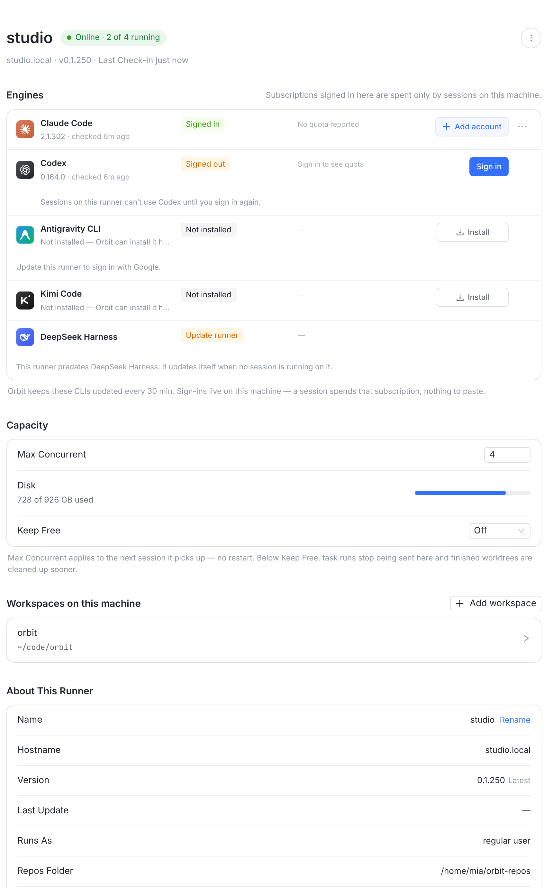
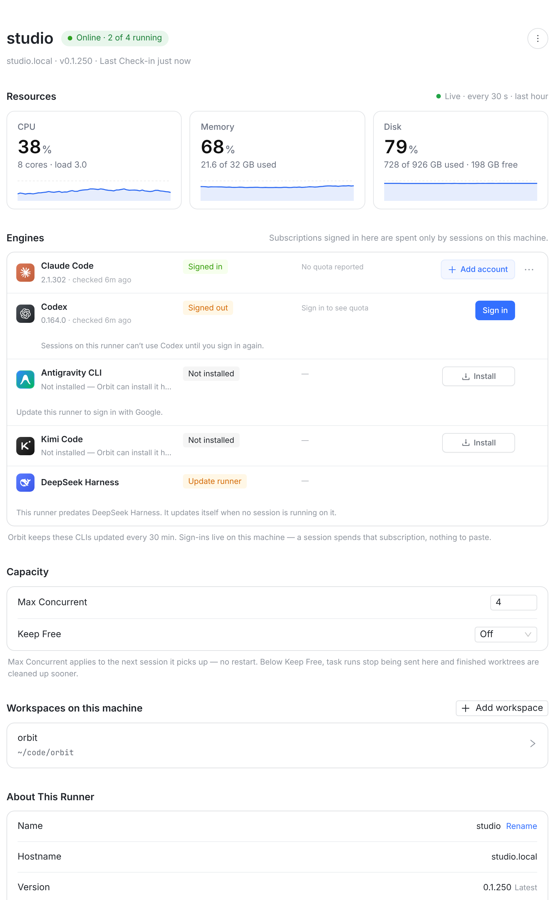
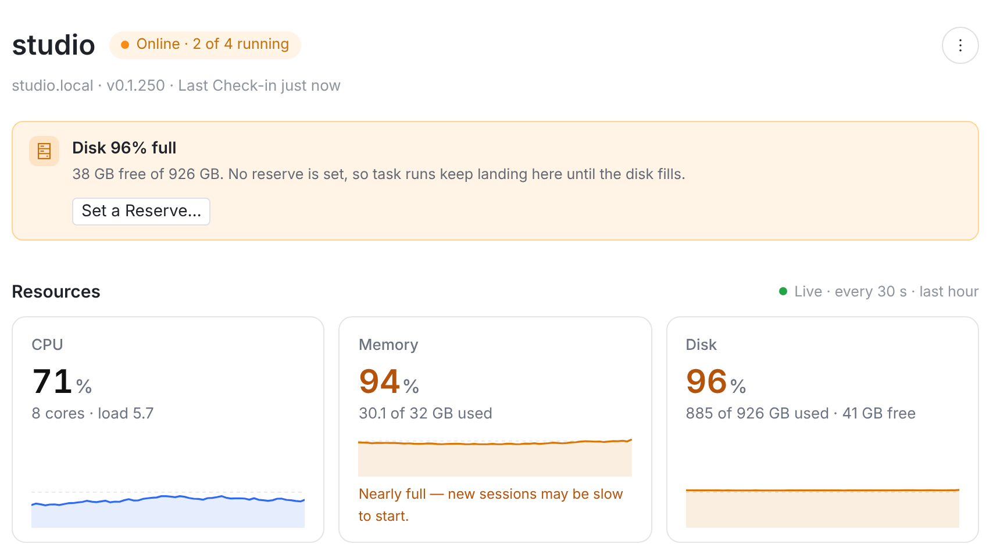
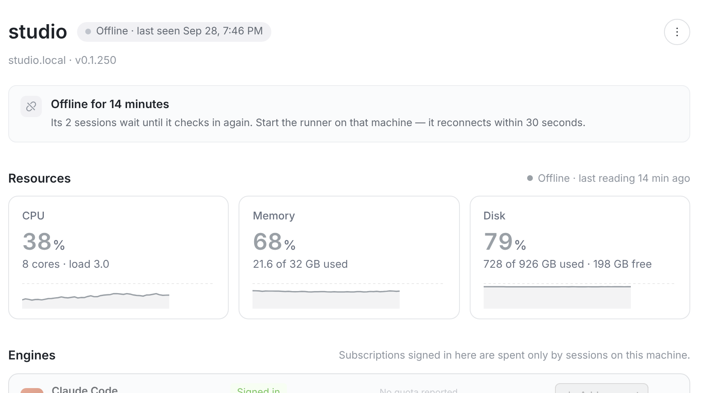
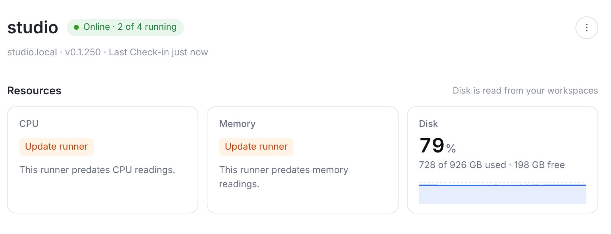
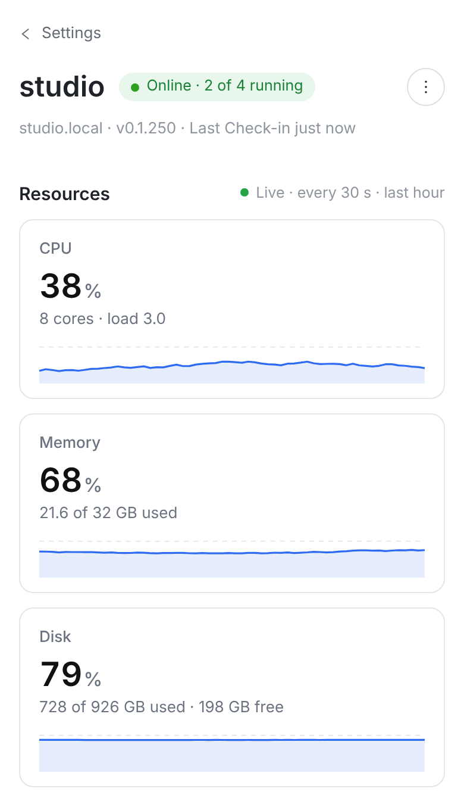

示例机器 studio（虚构），窗口 1280 宽。左：今天；右：方案（在真实页面上注入的原型 DOM，用页面自己的 section 样式）。

1
23



| 项 | 数字 | 明细行 | 变橙 | 旧 runner |
|---|---|---|---|---|
| CPU | 整机占用 %（两次心跳之间的平均） | 8 cores · load 3.0 | 不变色 | Update runner |
| Memory | (总量 − 可用) / 总量 | 21.6 of 32 GB used | ≥ 90%，加一句提示 | Update runner |
| Disk | 今天的 runnerDisk（workspace 所在盘里最紧的） | 728 of 926 GB used · 198 GB free | ≥ 90% 或低于 Keep Free（和今天的条一样） | 照常显示 |
| 层 | 改动 |
|---|---|
| runner-go | 心跳里加 resources: { cpuPercent, cpuCores, load1, memTotalBytes, memAvailableBytes }。Linux 读 /proc/stat、/proc/meminfo、/proc/loadavg；macOS 用 host_statistics / sysctl；Windows 先不报（卡上显示 “—”）。新增 capability resources/v1。 |
| apiserver | 最新一次读数存在 Runner 行上；一小时折线：每台机器只留最近 120 个点（30 s 一个），见待定 B。GET /api/runners/:id 带出来。 |
| shared | dto.ts 加 RunnerResources 类型。 |
| web | MachineSettingsPage.tsx 新 Resources 一节，Disk 行从 Capacity 移走；runnerCopy.ts 加文案；Settings.css。 |
| # | 问题 | A | B |
|---|---|---|---|
| 1 | 放哪 | A 单独一节 Resources，在 Engines 上面（本板） | B 并进 Capacity，三行条形，不要卡片 |
| 2 | 历史 | A 最近 1 小时折线：每台只存 120 个点，滚动覆盖 | B 只显示当前值，不存历史，不画线 |
| 3 | Disk 从 Capacity 搬走？ | A 搬走，Capacity 只留设置 | B 两处都显示 |
| 4 | 范围 | A 先做 web；iOS / macOS / Android 另开任务 | B 四端一起 |
| 5 | Machines 侧栏 / 机器列表要不要也显示一个小指标 | A 不要，只在机器页 | B 侧栏机器名旁显示 CPU% |